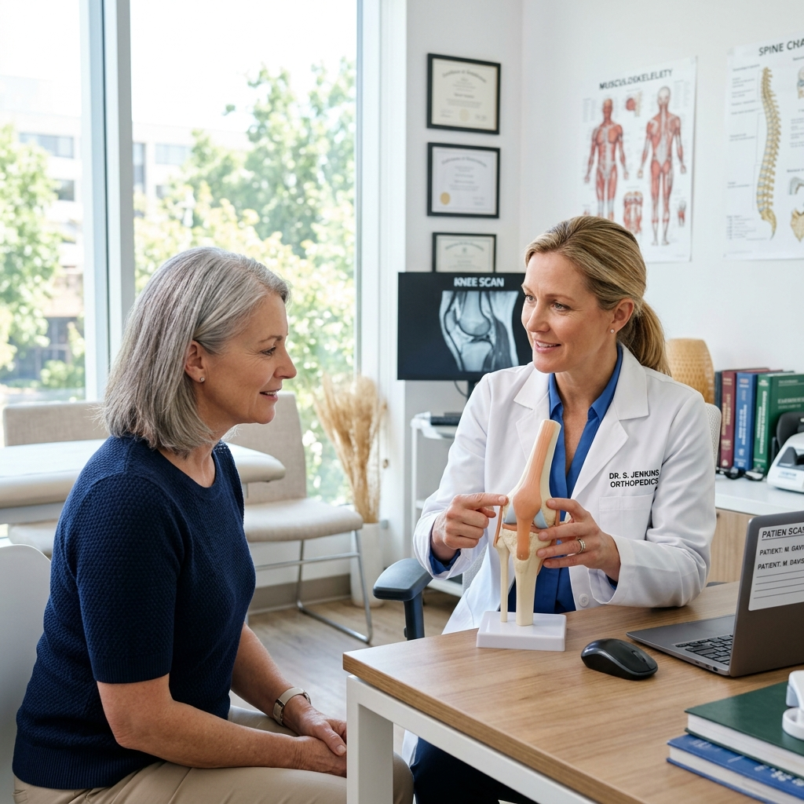

Expert orthopaedic care for joint pain, fractures, spine and sports injuries in Ullal, Bengaluru. Consult Dr. Kushal and Dr. Santosh. Call 063608 55615.

At Hermes Health Care in Ullal, Bengaluru, we are dedicated to providing world-class Orthopaedic Care services. Our clinic serves as a primary healthcare anchor for residents of Ullal, Jnana Ganga Nagar, Rajarajeshwari Nagar, Nagarbhavi, Kengeri, and surrounding areas. Our patient-first philosophy guides our team of experienced doctors and medical specialists to deliver evidence-based, compassionate care in a state-of-the-art facility.
Our clinical approach combines advanced diagnostics with specialized consultation to manage acute illnesses, track chronic conditions, and promote preventative wellness. We believe that health management should be comprehensive, accessible, and customized to each individual's unique physiological needs. Whether you require a routine health screening, minor surgical interventions, advanced physiotherapy programs, or specialist consultations for complex systemic illnesses, our multidisciplinary team coordinates closely to support your path to recovery.
Hermes Health Care represents a modern day care and multi-speciality model. This means that we perform diagnostics, consultations, minor surgeries, and active rehabilitation all under one roof, saving patients from the stress of navigating large corporate hospitals for primary and secondary care. We run daily clinics from 9:00 AM to 9:30 PM, ensuring that healthcare is accessible even during late evenings for working professionals and families.
If you or your family members are experiencing any of the following symptoms, scheduling a medical consultation at Hermes Health Care in Ullal is the first step toward diagnosis and relief. Ignoring early warning signs can lead to complications and chronic health challenges.
Ongoing pain, stiffness, warmth, and swelling around the knees, hips, shoulders, or wrist joints.
Stiffness or dull ache in the lumbar or cervical spine, especially in the morning or after sitting.
Difficulty bending, extending, or rotating joints fully, affecting basic tasks like walking or reaching.
Sharp, shooting nerve pain down the legs or arms, suggesting spinal nerve compression or sciatica.
A joint that feels like it might give way, locks up, or shows signs of swelling after minor trauma.
Sudden involuntary contractions or localized weakness in muscles surrounding major joints.
At Hermes Health Care, our clinical infrastructure is fully equipped to diagnose, manage, and treat a wide spectrum of health conditions. Our focus is on restoring health through evidence-based protocols and individualized medical attention.
Accurate treatment depends entirely on precise diagnostics. At Hermes Health Care in Ullal, Bengaluru, we employ a meticulous diagnostic approach. Our in-house clinical laboratory operates under strict calibration standards, utilizing modern diagnostic equipment to deliver highly reliable results.
During your consultation, our doctors perform detailed physical examinations and take a comprehensive history of your symptoms. Based on their initial findings, they may recommend targeted diagnostics, which can include pathology blood profiling, biochemistry panels, digital ECG, Holter monitoring, or low-dose digital X-rays. Having these services available in-clinic ensures that we can quickly correlate laboratory data with your clinical presentation to make safe, fast, and effective treatment decisions.
We prioritize patient comfort and safety during all diagnostic procedures. Our lab technicians are highly trained in pediatric and geriatric phlebotomy, ensuring blood collection is as painless and stress-free as possible. For patients with mobility limitations, we coordinate home sample collection services across Ullal and nearby neighborhoods, bringing our certified laboratory standards directly to your doorstep.
Do you need to schedule a diagnostic test or health package? We offer fast reporting.
We design personalized treatment regimens tailored to the severity of your condition, age, lifestyle, and overall wellness goals. Our clinical team believes in evidence-based pathways, utilizing conservative and medical therapies as a primary line of treatment, reserving surgical interventions for cases where structural corrections are absolutely necessary.
Our treatment options span advanced pharmacological management, specialized daycare therapies, structured physical rehabilitation, and minor outpatient surgical procedures. By combining the skills of our general physicians, orthopaedic surgeons, diabetologists, gynecologists, and physiotherapists, we provide comprehensive, cross-specialty recovery plans. This is particularly beneficial for senior patients managing multiple conditions, such as arthritis, diabetes, and hypertension, who require carefully coordinated medical supervision.
Education is a core pillar of our treatment philosophy. We spend time helping patients understand their diagnoses, the therapeutic mechanism of their prescribed medications, and the importance of active lifestyle modifications. Our team provides detailed guidance on clinical nutrition, therapeutic exercises, and stress management, empowering you to maintain long-term recovery and prevent future health complications.
Choosing Hermes Health Care for your medical needs provides numerous clinical and patient-centered benefits:
To help you understand why Hermes Health Care is preferred by residents in Ullal, Bengaluru, we have compiled a comparison table outlining key differences between our patient-first facilities and typical local clinics:
| Clinical Metric | Hermes Health Care | Other Clinics |
|---|---|---|
| Digital X-Ray | In-house low-dose digital imaging | Patient sent to external diagnostics |
| Rehab Integration | Direct coordination with in-house MPT physiotherapists | No direct communication / separate therapy |
| Fracture Splinting | Immediate plaster casting & monitoring | Only prescriptions / referrals |
| Doctor Qualifications | Surgeons with MS Ortho and tertiary experience | Non-specialist or visiting consults only |
Highly qualified and certified specialists delivering evidence-based patient-first solutions.
Specialist in Orthopedics. Expert in joint pain management, fracture alignment, spine disorders, and custom physical rehabilitation plans.
Book ConsultationSpecialist in joint replacements, bone surgeries, ligament repairs, arthroscopy, and trauma-based structural corrections.
Book ConsultationWe maintain the highest clinical standards to ensure accurate diagnosis, comfortable procedures, and successful recovery outcomes.
Consult with registered and certified doctors holding post-graduate medical qualifications and years of tertiary hospital experience.
Receive scientifically validated, peer-reviewed therapy plans designed around the latest international medical guidelines.
We prioritize your questions, values, and comfort, ensuring you never feel rushed during physical examinations or consultations.
We deliver outpatient consultations, diagnostics, and daycare procedures to residents in nearby neighborhoods:
Have questions about our Orthopaedic Care services? Browse answers to common patient inquiries:
An orthopaedic doctor specializes in treating musculoskeletal disorders affecting bones, joints, ligaments, tendons, and muscles. This includes fractures, arthritis, slipped discs, joint pain, and sports-related soft tissue tears.
You should consult an orthopaedic doctor if you suffer from persistent joint pain or swelling, severe morning joint stiffness, difficulty climbing stairs, shooting nerve pain down limbs, or after bone trauma.
Knee pain is commonly caused by osteoarthritis, meniscus tears, ACL ligament sprains, patellar tendonitis, or chronic bursitis. Accurate diagnosis via digital X-rays helps guide optimal non-surgical or surgical therapies.
Simple bone fractures are treated conservatively by aligning the bone and applying rigid plaster casts or custom splints. We coordinate regular digital X-rays to monitor healing stages over weeks.
Initial walking with a walker starts within 24 hours of surgery. Full recovery, return to normal domestic mobility, and complete independence typically take 6 to 12 weeks with physiotherapy.
Yes, our clinic provides orthopaedic consultations and emergency splinting services on Sundays, operating from 9:00 AM to 9:30 PM in Ullal, Bengaluru.
Orthopaedic doctors diagnose conditions, prescribe medications, perform surgical repairs, or align fractures. Physiotherapists design specialized exercises and use physical modalities like TENS to restore joint flexibility and muscle strength.
You can book an appointment at Hermes Health Care by calling 063608 55615, sending a message on WhatsApp, or visiting our clinic desk in Ullal, Jnana Ganga Nagar.
A slipped disc presents with localized back pain, which can shoot down the leg (sciatica), accompanied by tingling, burning, or muscle weakness in the leg.
Yes! Over 80% of orthopaedic cases like mild arthritis, back pain, and muscle strains are resolved through medications, therapeutic injections, specialized bracing, and physiotherapeutic conditioning.
Arthroscopy is a minimally invasive surgical procedure where a tiny camera (arthroscope) is inserted into a joint (like the knee or shoulder) to diagnose and repair cartilage or ligament tears.
Hermes Health Care offers experienced orthopedic surgeons, Dr. Kushal Raghavendra and Dr. Santosh H R, supported by in-house digital X-rays and a physiotherapy unit, making it the top choice near Jnana Ganga Nagar.
Core strengthening, hamstring stretches, pelvic tilts, and low-impact swimming are highly beneficial. Always consult our physiotherapists to learn the correct exercise techniques for your specific spinal condition.
Our orthopedic surgeons evaluate candidates for total knee or hip replacements, coordinate pre-operative workups, and perform surgeries at allied tertiary hospitals, handling all follow-ups and physiotherapy in-clinic.
Hermes Health Care keeps consultation fees affordable. Contact our front desk on WhatsApp at +91 63608 55615 to get exact pricing details for doctor visits and X-rays.
Take control of your health. Consult our experienced medical specialists in Ullal, Bengaluru for expert diagnostic and recovery pathways.